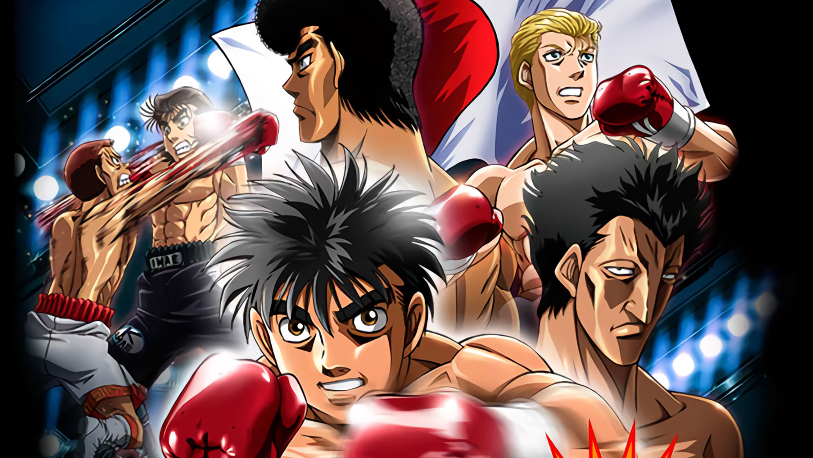
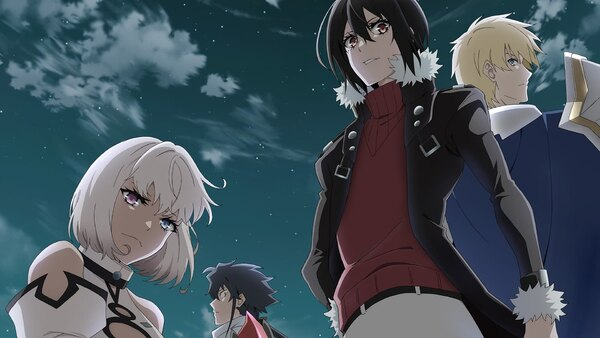

The Best Animes According To Rudra
My top 3 animes of all time
One Piece

One Piece is a legendary adventure with epic battles, heartfelt friendships, and hilarious moments—Luffy's wild antics and the crew's crazy dynamics never fail to crack me up.
Hajime no Ippo

Hajime no Ippo is all about Ippo's inspiring journey from a timid kid to a fierce boxer, packed with intense matches and heartfelt moments that really hit hard.It nails the comedy too—those training mishaps, Takamura's wild antics, and the hilarious banter between the characters always balance out the intense boxing drama.
Wajutsushi

The main character of this anime , Noel Stollen had this fearless vibe, never afraid to take bold risks and outsmart anyone standing in his way.